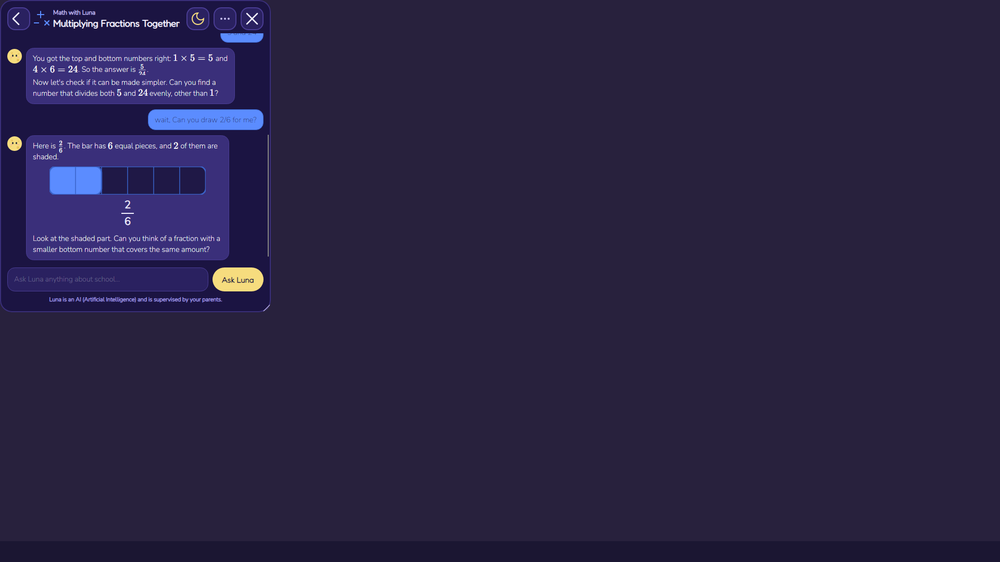
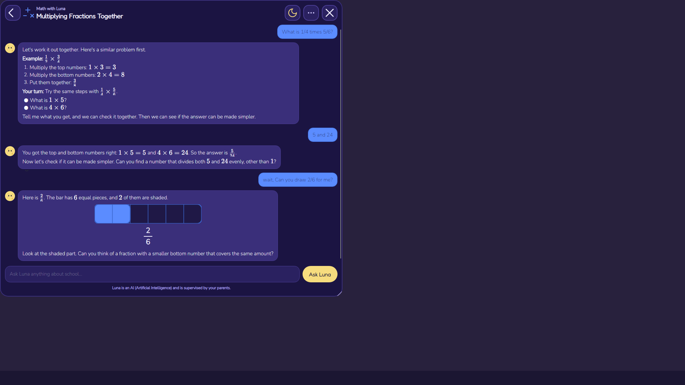
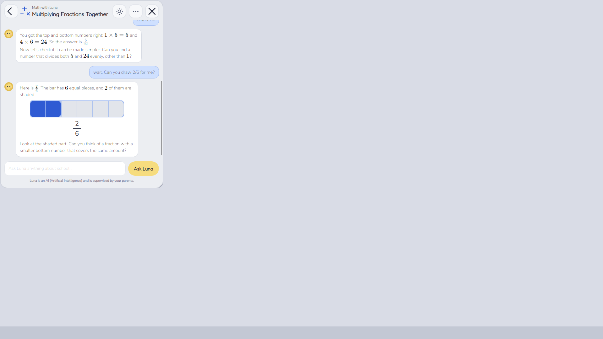
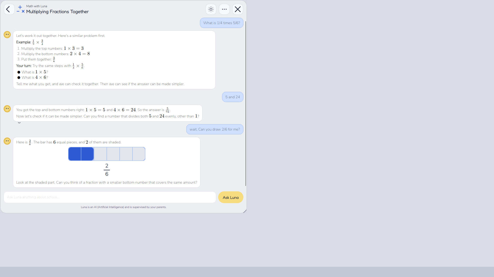
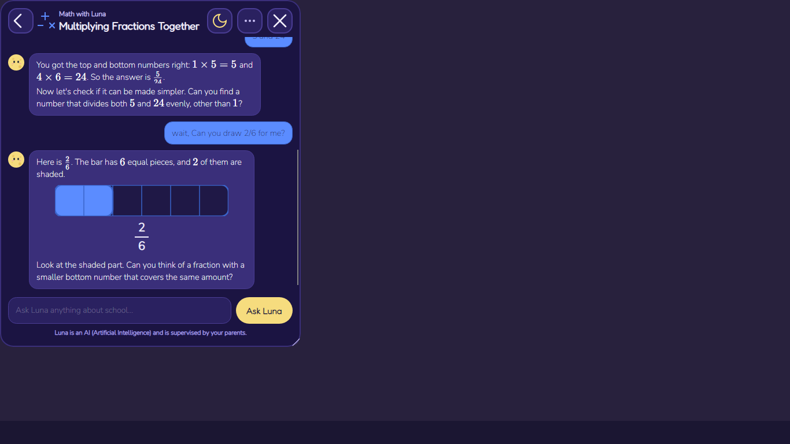
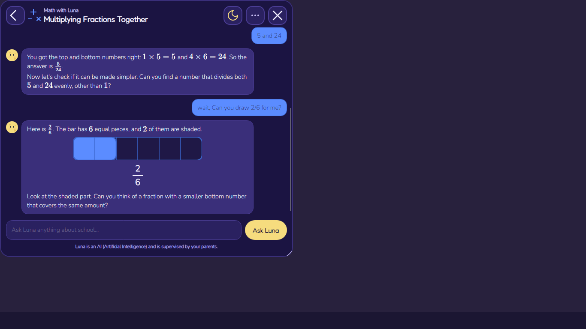
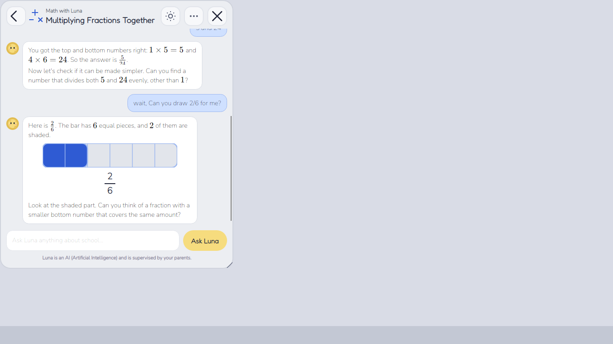
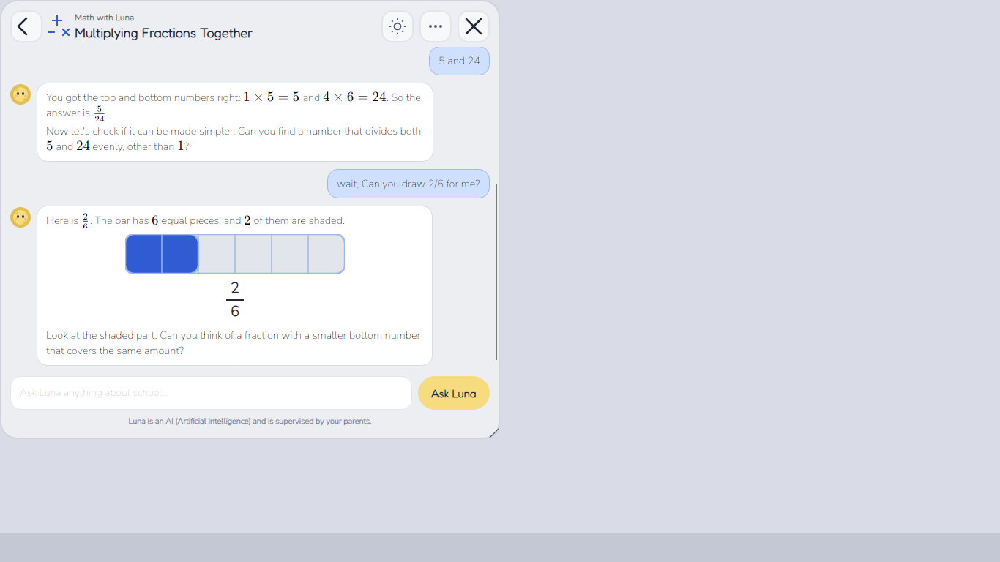

The “before” images are v0.17.6 (default 520 × 600). The “after” images use the Job 18.8 default:
50% × 80% of the working area, never below 520 × 600 where the screen allows it. Both themes are
shown on a 1920 × 1080-class screen (1040 DIP working height) and on 1366 × 768 (728 DIP working height).








The after window is wider, so the bubbles use up to 88% of the chat column and more text fits per line.
Pictures and display math stay centred and keep their limits. The child’s text is the design ink
(#15103a in Night sky) on every subject colour; Job188ChatTests checks WCAG contrast
≥ 4.5:1 for all six subjects in both themes. The scroll policy and the “New message ↓” pill are covered by the
headless tests, because the transparent Luna window cannot be captured by DWM (the Job 18.4 limitation).